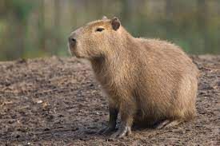

Notícias cidade
A fauna
A capivara

Por Maria Moura, da Agência Senado
A capivara ou capincho (nome científico: Hydrochoerus hydrochaeris) é uma espécie de mamífero roedor da família Caviidae e subfamília Hydrochoerinae. Alguns autores consideram que deva ser classificada em uma família própria. Está incluída no mesmo grupo de roedores ao qual se classificam as pacas, cutias, os preás e o porquinho-da-índia. Ocorre por toda a América do Sul ao leste dos Andes em habitats associados a rios, lagos e pântanos, do nível do mar até 1 300 m de altitude. Extremamente adaptável, pode ocorrer em ambientes altamente alterados pelo ser humano.
É o maior roedor do mundo, pesando até 91 kg e medindo até 1,2 m de comprimento e 60 cm de altura. A pelagem é densa, de cor avermelhada a marrom escuro. É possível distinguir os machos por conta da presença de uma glândula proeminente no focinho apesar de o dimorfismo sexual não ser aparente. Existe uma série de adaptações no sistema digestório à herbivoria, principalmente no ceco. Alcança a maturidade sexual com cerca de 1,5 ano de idade, e as fêmeas dão à luz geralmente a quatro filhotes por vez, pesando até 1,5 kg e já nascem com pelos e dentição permanente. Em cativeiro, pode viver até 12 anos de idade.
"A característica mais chamativa na capivara é seu grande porte: pesa em média, entre 49 e 50 kg, sendo o maior roedor do mundo. As fêmeas tendem a ser maiores que os machos e no estado de São Paulo, foi registrado uma fêmea que pesava até 91 kg. No Uruguai, foi registrado um macho que pesava cerca de 73 kg. As capivaras encontradas no centro-oeste e sudeste do Brasil, e Argentina, tendem a ser maiores que aquelas encontradas na Venezuela. A capivara possui até 1,2 m de comprimento e 60 cm na altura da cernelha, com um corpo em formato de barril e robusto, coberto por uma densa pelagem que varia do avermelhado ao marrom-escuro."
Etimologia e nomes populares
A capivara também é chamada de carpincho, capincho, beque, trombudo, caixa, cachapu, porco-capivara, cunum e cubu. O nome capivara procede do termo tupi kapi'wara, que significa "comedor de capim". Tal nome é o mais comum e conhecido por todo o Brasil. No Rio Grande do Sul também é conhecida por capincho ou carpincho, termo derivado do espanhol. No Amazonas, é conhecida por cupido e na Ilha de Marajó, no Pará, por beque. O macho, neste mesmo local, devido à glândula nasal no focinho, é chamado de trombudo, caixa ou cachapu. Em alguns locais do interior da Bahia, a capivara é chamada de porco-capivara, no sudeste do Pará por cunum e de cubu em alguns locais do estado de Goiás.
“Educação ambiental que permita ao brasileiro pelo menos saber o significado do que seja uma Unidade de Conservação Ambiental, a fim de que ele possa contribuir para a sua preservação. A população brasileira deve saber que o Cerrado é o segundo maior bioma da América do Sul, menor apenas do que a Amazônia. É a savana de maior diversidade de espécies do planeta: concentra cerca de 5% da biodiversidade mundial e 30% da biodiversidade brasileira”, declarou.
Taxonomia e evolução
A capivara foi descrita pela primeira vez por George Marcgraf em 1648, como Capy-bara Brasiliensus: Porcus est fluvialitis ("porco dos rios"). No entanto, sua primeira classificação só foi oficialmente elaborada por Carolus Linnaeus, em 1758, junto com o porquinho-da-índia, como Mus porcellus.[5] Posteriormente, Linnaeus reclassificou a capivara entre os suínos, como Sus hydrochaeris. Mathurin Jacques Brisson em 1762 classificou a capivara no gênero Hydrochoerus. Visto que o trabalho de Brisson, Regnun Animale não seguiu a nomenclatura binomial adequadamente, tal nome não deveria ser considerado válido. Houve debate que o nome deveria ser Hydrochoeris, criado no trabalho Zoologiae Fundamenta por Brünnich, datado de 1772. Entretanto, dado seu largo uso, durante 230 anos, em 1998 o Bulletin of Zoological Nomenclature oficialmente reconheceu o gênero Hydrochoerus.
A última edição do Mammal Species of the World (2005) adotou o nome proposto por Brisson (Hydrochoerus). Entretanto, os autores consideraram, incorretamente, que o nome Hidrochoeris foi o proposto por este autor. Tal confusão foi resolvida na reimpressão do livro, mas não foi mudada na versão on-line.
A capivara é um roedor incluído na família Caviidae, subfamília Hydrochoerinae. Tal subfamília foi considerada, por muito tempo, uma família separada (Hydrochoeridae), mas estudos genéticos claramente consideram que as capivaras devem ser incluídas em Caviidae, tornando Hydrochoeridae uma subfamília. Alguns estudos apontam Kerodon (ao qual pertence as duas espécies de mocós) como o grupo de roedores mais próximo evolutivamente do gênero Hydrochoerus, apesar de que tal relação ainda não está bem resolvida. Considerando a relação com o gênero Kerodon, pode ser válido considerar Hydrochoeridae como uma família. Mas é inquestionável, até o momento, que a capivara é um roedor caviomorfo, dentro da superfamília Cavioidea, que representa uma importante radiação de roedores Hystricognathi no Novo Mundo, ao qual fazem parte as cutias, a mara, a paca, a pacarana, os preás e o porquinho-da-índia também.
Atualmente, não são reconhecidas subespécies da capivara. Até 1991, alguns autores consideravam Hydrochoerus isthmius, que ocorre no Panamá, norte da Colômbia e Venezuela, como uma subespécie da capivara (Hydrochoerus hydracheris), mas é classificada como uma espécie separada desde esta data.
Registro fossíl
Os registros mais antigos de capivaras datam do Mioceno, entre 7 e 9 milhões de anos atrás, da Argentina central. De fato, a superfamília Cavioidea começou a se diversificar na Patagônia. Inicialmente, foram descritas quatro subfamílias de Hydrochoeridae, com um grande número de espécies e gêneros de capivaras pré-históricas descritas, mas atualmente, representada apenas por duas espécies. A mais antiga espécie relacionada à capivara atual é Cardiatherium chasioense, que ocorreu onde hoje é a província de Buenos Aires, Argentina. No Plioceno, entre 5,3 e 2,5 milhões de anos atrás, existiu o gênero Phugatherium, também próximo da atual capivara. O gênero Hydrochoerus surgiu no fim do Plioceno na América do Sul, mas a mais antiga espécie conhecida é Hydrochoerus gaylordi, das Antilhas. No fim do Pleistoceno, é provável que a atual capivara já ocorresse do sul da América do Norte até o centro da Argentina.
Essas espécies fósseis, assim com a atual, viviam em ambientes semiaquáticos. Algumas espécies muito próximas da capivara atual, como as do gênero Chapalmatherium e Neochoerus, do Pleistoceno, eram particularmente grandes, podendo atingir 200 e 110 kg respectivamente. Apesar disso, as espécies fósseis relacionadas à capivara possuíam características muito semelhantes (como a formação de manadas) à espécie moderna: aparentemente, tais características existem desde o fim do Mioceno.
Distribuição geográfica e habitat
A capivara é uma espécie amplamente distribuída na América do Sul, e ocorre em todos os países desse continente, exceto no Chile. É encontrada a leste dos Andes até a foz do rio da Prata, na Argentina. Apesar dessa ampla distribuição, ela é mais rara em alguns locais, com algumas extinções locais confirmadas, como em partes dos llanos da Venezuela e em várias regiões da Caatinga, no Brasil. Também foi extinta em parte do litoral do Nordeste Brasileiro, entre o Rio Grande do Norte e o Ceará. No Pleistoceno, ocorria até a América do Norte, no sul dos Estados Unidos. Entretanto, a espécie está se tornando invasora na Flórida.
Ao longo desses locais, habita uma ampla variedade de habitats ao longo de rios, lagos, represas e pântanos. É abundante em florestas de galeria e áreas periodicamente inundáveis. Sua presença tem sido reportada desde o nível do mar até 1 300 m de altitude. No Brasil, é abundante nas bacias dos rios Amazonas, Paraná e Araguaia; no Pantanal e nas regiões dos lagos no Rio Grande do Sul.
É um animal adaptável e pode ser encontrada em inúmeros ambientes altamente alterados pelo homem, principalmente em pastagens e canaviais. Pode alcançar altas densidades nesse locais se não caçada, sendo considerada uma praga em algumas ocasiões. É possível que o desmatamento para criação de pastagens possa ter favorecido a expansão da ocorrência da capivara em alguns locais. Frequentemente, pode ser encontrada em áreas urbanas, parques e até mesmo, áreas residenciais.
Descrição
As capivaras encontradas no centro-oeste e sudeste do Brasil, e Argentina, tendem a ser maiores que aquelas encontradas na Venezuela. A capivara possui até 1,2 m de comprimento e 60 cm na altura da cernelha, com um corpo em formato de barril e robusto, coberto por uma densa pelagem que varia do avermelhado ao marrom-escuro. A forma do corpo é parecida com a do gênero Cavia, ao qual pertence o porquinho-da-índia (Cavia porcellus), mas é muito maior e proporcionalmente mais brevilíneo. A cauda é muito pequena e vestigial. Interessantemente, ao contrário de outros roedores, as capivaras possuem glândulas sudoríparas distribuídas ao longo do corpo. A pele é ondulada, com pelos emergindo em ângulo agudo com folículos agrupados em três associados à glândulas sebáceas.
A cabeça é grande, com orelhas pequenas e sem pelos, com um prega que fecham a abertura da orelha interna. As pernas são curtas e as patas traseiras são mais longas que as dianteiras. Estas, apresentam quatro dedos e as traseiras três, com as pegadas se assemelhando a de perissodáctilos, como a anta. Os dedos são distribuídos radialmente. São grossos, similares a cascos, unidos por pequenas membranas interdigitais. Visto ser um animal herbívoro, a capivara possui inúmeras adaptações a esse tipo de dieta: possui um estômago simples em formato de "J" com volume de até 2l, quando completamento cheio, com ceco desenvolvido. O ceco é utilizado para fermentar o alimento ingerido, por meio de bactérias que que nele habitam (principalmente Firmicutes, Proteobacteria e pelo menos 17 espécies de protozoários). Esta estrutura, localizada entre o intestino delgado e o cólon, pode ter até 5 l de volume, ocupando entre 63 e 74 % do volume do sistema digestório. O intestino delgado possui até 10 m de comprimento.
A capivara não possui dimorfismo sexual aparente e é difícil diferenciar a genitália entre macho e fêmea, mas é possível distinguir os machos por conta de uma glândula nasal homóloga à glândula pigmentária de muitos roedores. Entretanto, tal glândula pode ser observada também em algumas fêmeas. A glândula é desprovida de pelos e aumenta de tamanho após os 25 meses de idade. Geralmente, machos dominantes ou com altas concentrações de testosterona plasmáticas possuem glândulas maiores. A glândula nasal dos machos produz secreções complexas, mas compostas majoritariamente por lipídios. A composição dessas secreções é diferente entre os indivíduos e pode servir para reconhecimento destes. Além dessa glândula nasal, as capivaras possuem glândulas anais, assim como outros roedores e estão presentes tanto nos machos quanto nas fêmeas, apesar de que a morfologia delas é sexualmente dimórfica.